Cómo prestar, entregar, recoger, recargar y cambiar equipos biomédicos, y cómo llevar clientes, inventario y formatos.
Parte 1 · OficinaPréstamos, entregas, clientes e inventario.
Parte 2 · RepartidorEntregas, recogidas, recargas y cambios desde el celular.
Parte 3 · AdministraciónUsuarios, equipos, plantillas de actas y ajustes.
portal.ingemedic.com.co · Versión de octubre de 2026
Contenido
Antes de empezar
Entrar al portal
El menú y la ayuda
Avisos y novedades
Modo oscuro
Parte 1 · Oficina
Dashboard y avisos
Inventario
Préstamos: crear uno
Llenar los formatos
El detalle de un préstamo
Recoger, recargar y cambiar
Recarga periódica
Entregas
Clientes y pacientes
Bitácora
Parte 2 · Repartidor
Tu lista del día
Iniciar una visita
Registrar y firmar
Tipos de visita
Descargar el acta
Tu perfil
Parte 3 · Administración
Usuarios y roles
Acceso de clientes
Categorías y tipos
Datos de la empresa y logos
Plantillas de actas
Cargue masivo
Preferencias
Anexos
Estados
Preguntas frecuentes
Antes de empezarPara todos los usuarios
Entrar al portal
Abre portal.ingemedic.com.co en el computador o en el celular.
Escribe tu correo y tu contraseña. Si no tienes cuenta, pídesela a administración.
Entras al Dashboard (oficina) o a sus Entregas (repartidor).
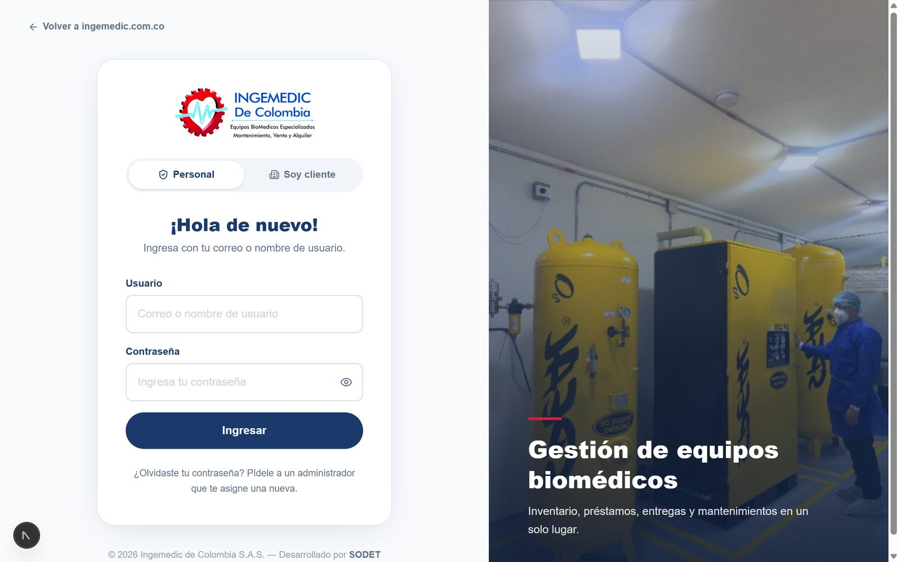
La pantalla para entrar al portal.
La sesión dura 8 horas. Después el portal te pide entrar de nuevo. Si usas un computador compartido, cierra sesión al terminar (menú → Cerrar sesión).
El menú y la ayuda
A la izquierda está el menú con los módulos. En el celular, el menú está abajo. Solo ves los módulos que tu rol tiene permitidos.
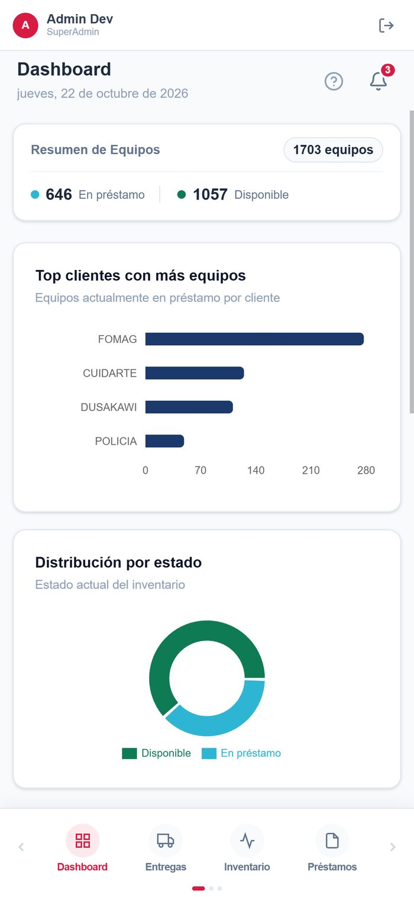
En el celular el menú está abajo; desliza para ver más módulos.
Cada módulo tiene un botón ? arriba con una guía corta de lo que se hace ahí.
Avisos y novedades
Avisos: al entrar, el portal te muestra lo que requiere atención: préstamos vencidos o por vencer y recargas por hacer. También salen en la franja de arriba.
Novedades: cuando el sistema tiene funciones nuevas, aparecen en el buzón de novedades del encabezado.
Modo oscuro
Desde tu perfil o en Configuración → Preferencias eliges modo claro, oscuro o automático (según el celular o computador). La preferencia te sigue en cualquier dispositivo.
Parte 1 · OficinaPréstamos, entregas, clientes e inventario
Dashboard y avisos
El Dashboard resume el inventario y los préstamos:
Cuántos equipos hay en cada estado (disponibles, reservados, en préstamo…).
Los clientes con más equipos y en qué municipios del Cesar están.
Las últimas órdenes y la actividad reciente.
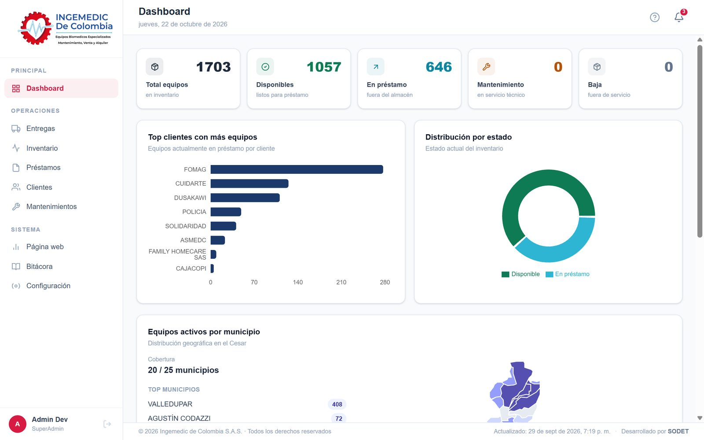
El Dashboard: equipos por estado, clientes con más equipos y municipios.
La ventana Esto requiere tu atención se abre una vez por sesión cuando hay pendientes:
Aviso
Qué puedes hacer ahí
Préstamos vencidos / por vencer
Recoger un equipo (abre el préstamo para recogerlo con acta), Extender la vigencia o Posponer el aviso 3, 7 o 30 días.
Recargas por hacer
Programar recarga (abre el préstamo en el paso de recarga) o Posponer.
Inventario
Los equipos están organizados por categoría (p. ej. Cilindros de Oxígeno) y tipo (p. ej. Cilindro 5.7 M3). Cada equipo físico es una unidad con su código de inventario (RL975…).
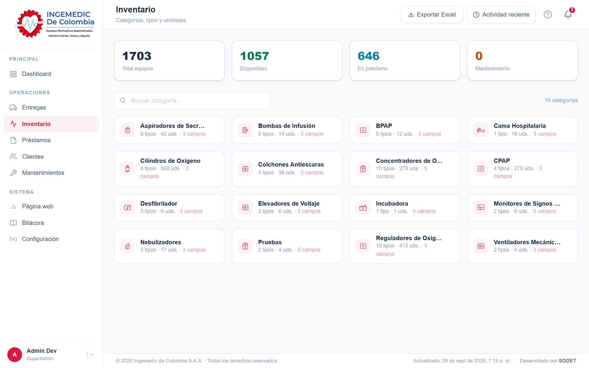
Inventario: las categorías con sus tipos y unidades.
Buscar un equipo
Entra a la categoría y al tipo, o escribe el código en el buscador.
Toca el equipo para ver su hoja de vida: datos, estado, a quién está prestado y su línea de tiempo.
Desde la hoja de vida puedes descargarla en PDF o exportar el inventario a Excel.
Registrar equipos nuevos
Entra al tipo y toca Nueva unidad.
Escribe el código de inventario (el sistema sugiere el siguiente y avisa si ya existe), la serie y los demás datos.
Guarda. El equipo queda Disponible.
Si el tipo no existe, créalo con Nuevo tipo dentro de la categoría.
El estado del equipo no se cambia a mano. Cambia solo: con un préstamo pasa a Reservado o En préstamo; al recogerlo vuelve a Disponible.
Préstamos: crear uno
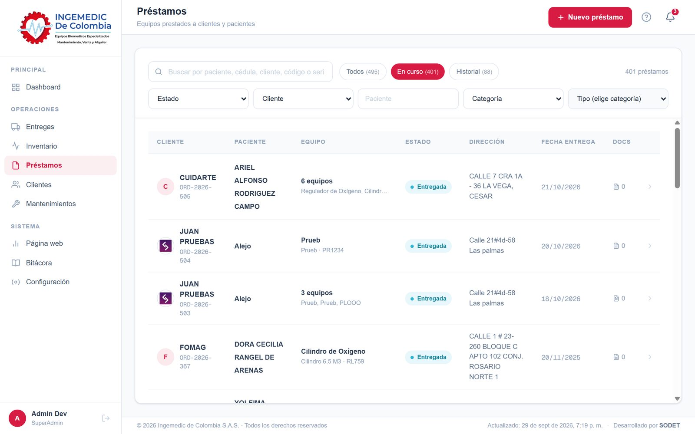
La lista de préstamos, con el buscador y los filtros.
Toca Nuevo préstamo. El asistente tiene 5 pasos y guarda un borrador: si sales, lo retomas después.
Cliente y paciente. Elige el cliente (los más usados salen primero). Busca el paciente por nombre o cédula, o crea uno nuevo. Si el préstamo es para una institución, marca Sin paciente. La dirección es obligatoria.
Equipos. Agrega los equipos disponibles: por categoría y tipo, o buscando el código.
Entrega. Elige En oficina (el equipo sale ya, con fecha) o A domicilio (repartidor y fecha y hora). Define la vigencia del préstamo si tiene fecha de fin.
Formatos. Vienen marcados los formatos del cliente (o el de Ingemedic). Toca Llenar formatos para completar los datos mirando la hoja (ver la sección siguiente).
Confirmación. Revisa el resumen y, si quieres, Ver cómo quedan. Toca Crear préstamo.
En oficina o a domicilio. En oficina el préstamo queda Entregada de una vez y sus formatos quedan listos para descargar e imprimir. A domicilio queda Programada y aparece en la lista del repartidor, que recoge las firmas al entregar.
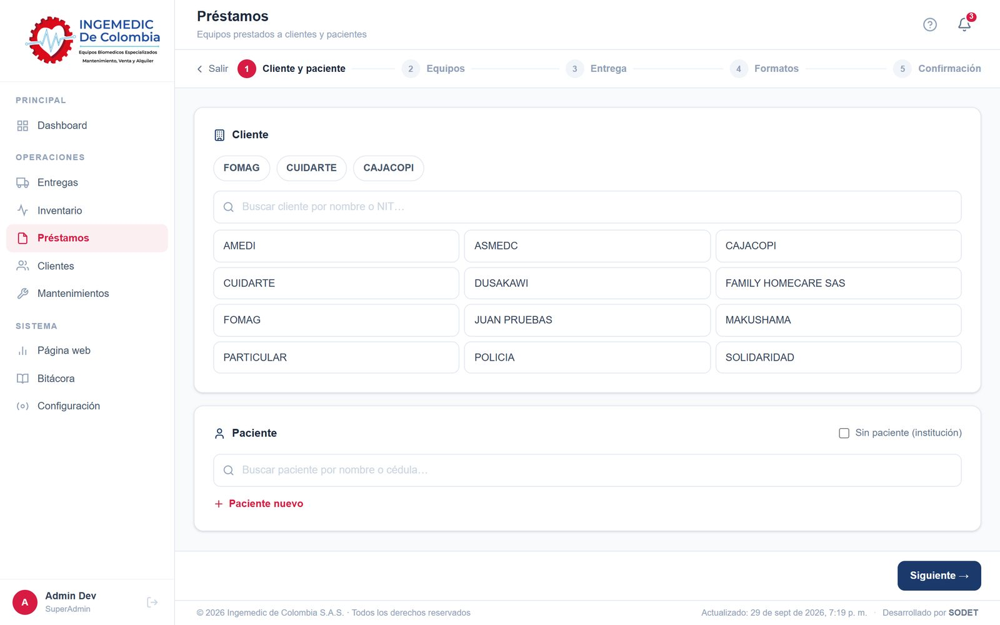
Paso 1 del asistente: cliente y paciente.
Llenar los formatos
La ventana grande muestra la hoja a la izquierda y los campos a la derecha. En el celular cambias entre Campos y Ver hoja.
Arriba hay una pestaña por formato, con cuántos datos le faltan.
Toca un campo y se resalta su lugar en la hoja; toca un espacio en la hoja y te lleva a su campo.
Los espacios en ámbar están vacíos. Llena lo que aplique: lo demás queda en blanco para llenarlo a mano.
Lo que es del paciente (cédula, EPS, barrio…) queda guardado en el paciente para la próxima vez.
Las firmas no se llenan aquí: las recoge el repartidor o se firman en oficina.
El detalle de un préstamo
En Préstamos, busca por paciente, cédula, cliente, NIT, código o serial del equipo, o usa los filtros, y abre el préstamo. Ahí encuentras:
Sección
Qué muestra
Estado y botones
El estado y las acciones: Recoger, Recarga, Cambiar, Cancelar préstamo.
Repartidor y fecha
Se cambian mientras el préstamo no se ha entregado.
Vigencia
Hasta cuándo va el préstamo, o indefinido. Siete días antes avisa.
Programado
Recogidas, recargas o cambios a domicilio pendientes, con Cancelar.
Recargas
Cada cuántos días se recarga y cuándo toca la próxima.
Equipos
Cada equipo con sus botones Recoger / Recargar / Cambiar.
Actas
Las actas firmadas (o los formatos sin firmar), con Ver y Descargar PDF. Las de recogidas, recargas y cambios salen con su etiqueta.
Historial
Todo lo que le pasó al préstamo, en orden: creación, entrega, recargas, cambios, recogidas, vigencia, con quién lo hizo y Ver acta.
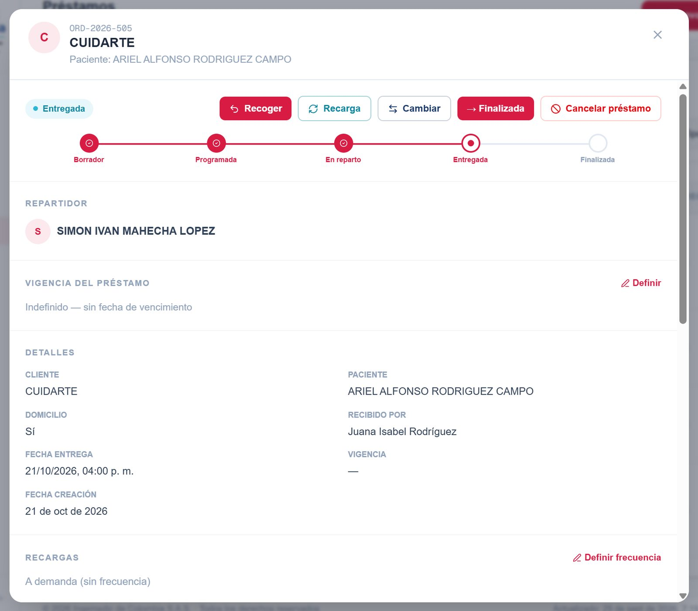
El detalle de un préstamo, con los botones Recoger, Recarga y Cambiar.
Recoger, recargar y cambiar
Con el préstamo Entregada, toca Recoger, Recarga o Cambiar (arriba para varios equipos, o en un equipo). Se abre un asistente igual al de préstamo nuevo:
Equipos. Marca cuáles. En una recarga solo salen los equipos que se recargan. En un cambio, por cada equipo que sale toca Elegir el que entra y escribe el motivo.
Cómo.En oficina (con la fecha) o A domicilio (repartidor, fecha y hora).
Formatos. Viene el formato de esa acción (el del cliente o el de Ingemedic). Toca Llenar formatos.
Confirmación. Revisa y toca Ver cómo queda si quieres ver el acta.
Si es…
Botones al final
Qué pasa
En oficina
Firmar ahora o Registrar sin firmas
Firman el paciente o familiar y tú. Se aplica en el momento: lo recogido queda disponible, el cambio se hace en el préstamo, la recarga queda registrada. Sin firmas, el acta queda guardada para imprimir.
A domicilio
Programar
Queda en Programado y en la lista del repartidor. En un cambio, el equipo nuevo queda Reservado. Se aplica cuando el repartidor firma.
Antes de entregar. Si el préstamo aún no se entrega, Cambiar equipo reemplaza el equipo directo, sin acta: el acta de la entrega ya sale con el nuevo.
Préstamo finalizado. Al recoger todos los equipos, el préstamo pasa solo a Finalizada.
Recarga periódica
En el préstamo, sección Recargas, toca Definir frecuencia y escribe cada cuántos días (p. ej. 15).
El portal calcula la próxima recarga desde la última (o desde la entrega).
Cuando toca (o un día antes), sale en los avisos con Programar recarga.
Déjalo vacío para recargas solo a demanda. Qué equipos se recargan lo define administración (Parte 3 → Categorías y tipos).
Entregas
El tablero muestra todo lo que va a domicilio en tres columnas:
Por iniciar: entregas de préstamos y recogidas, recargas y cambios programados (cada uno con su etiqueta).
En ruta: el repartidor va en camino, con el tiempo que lleva.
Completadas: las de hoy; Historial muestra las anteriores.
Abre una completada para ver quién recibió, la firma y Acta PDF. Filtra por repartidor, fecha o cliente.
Quién las inicia. Las visitas las inicia el repartidor desde su celular. Lo que se hace en oficina no aparece en este tablero: queda en el préstamo.
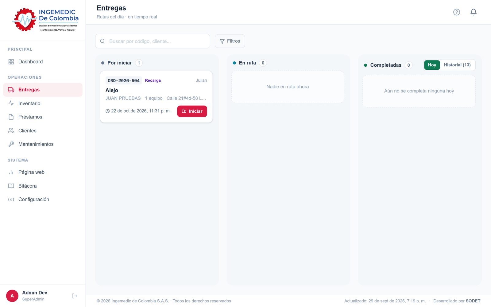
El tablero de Entregas: por iniciar, en ruta y completadas.
Clientes y pacientes
Dos pestañas: Clientes (EPS, IPS, instituciones) y Pacientes. Al abrir un cliente ves su hoja de vida:
En préstamo: los equipos que tiene ahora, filtrables por tipo, por paciente o buscando el código.
Línea de tiempo: préstamos, entregas, recargas, cambios y devoluciones en palabras ("Se prestó Cilindro de Oxígeno a Ana Pérez").
Por equipo: cada equipo que tuvo el cliente; ábrelo para ver toda su historia (prestado, recargas, cambios y devuelto).
Informe: descárgalo en PDF o Excel; trae equipos, pacientes, línea de tiempo e historial por equipo.
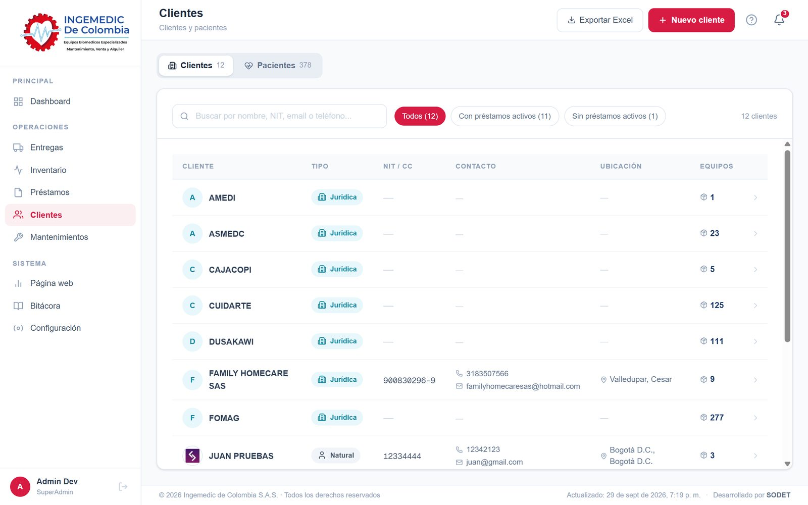
La lista de clientes.
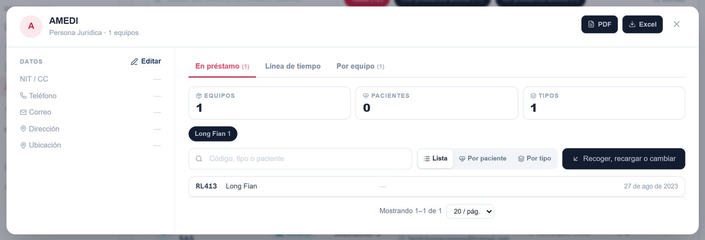
La hoja de vida de un cliente: en préstamo, línea de tiempo y por equipo.
Recoger, recargar o cambiar desde Clientes
En En préstamo toca Recoger, recargar o cambiar.
Marca los equipos (de un mismo paciente) y toca la acción.
Se abre el préstamo en el asistente; al terminar vuelves al cliente.
En un paciente, cada equipo tiene sus enlaces Recoger, Recargar y Cambiar, que funcionan igual.
Para editar un cliente o paciente, ábrelo y toca editar. En el cliente también puedes subir su logo, que sale en los listados y en su informe.
Bitácora
Registra quién hizo qué y cuándo: préstamos creados, entregas, recogidas, cambios de vigencia, ediciones de clientes, plantillas, etc. Busca o filtra por módulo, acción o fechas.
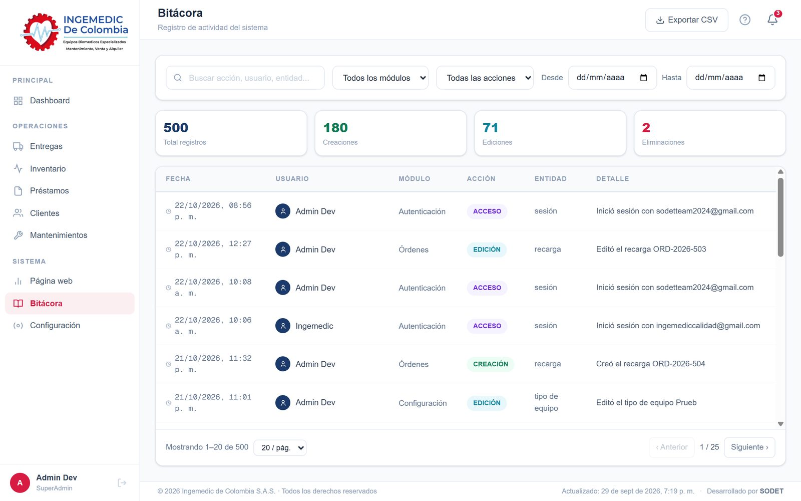
La Bitácora con sus filtros.
Parte 2 · RepartidorDesde el celular
Tu lista del día
Al entrar ves tus visitas (Entregas, abajo) con dos pestañas: Pendientes y Completadas. Las pendientes salen agrupadas:
Grupo
Qué es
En camino
Visitas que ya iniciaste.
Atrasadas
Debían hacerse antes de hoy.
Hoy · Mañana · Próximas
Según la fecha programada.
Sin fecha programada
Sin hora definida.
Cada tarjeta dice si es entrega o una Recogida, Recarga o Cambio de equipo, y muestra el paciente, la dirección, los equipos y las notas de oficina. Tiene Llamar y Cómo llegar.
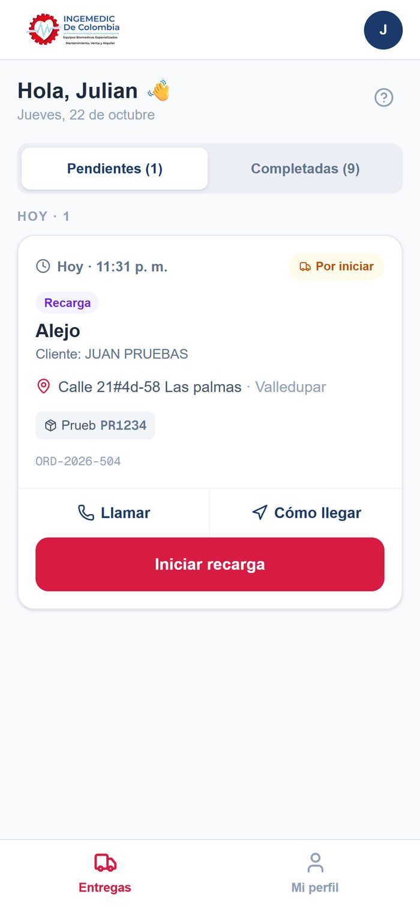
Pendientes: cada visita con su tipo, dirección y equipos.
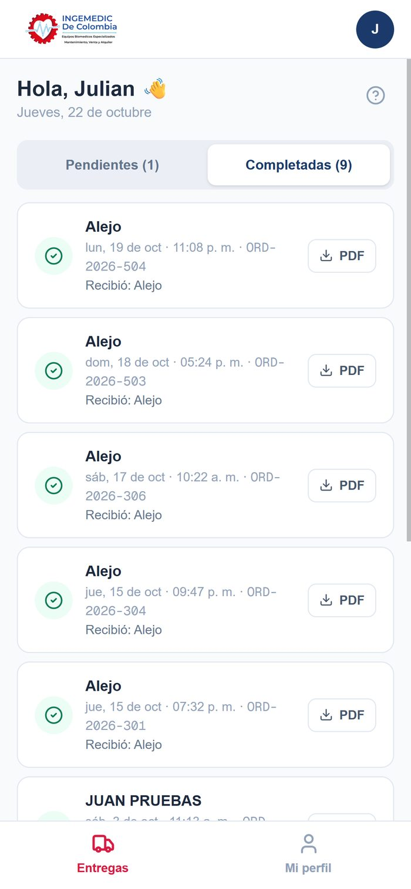
Completadas: el acta de cada visita en PDF.
Iniciar una visita
Toca Iniciar en la tarjeta y confirma.
Se abre la visita en curso: destino, botones para llamar o abrir el mapa, los equipos y un cronómetro.
Puedes volver a la lista y abrirla después con Abrir … en curso.
Registrar y firmar
Al llegar, toca Llegué · Registrar. Son unos pocos pasos:
Datos. Quién recibe (o quién entrega los equipos, en una recogida): el mismo paciente o un familiar con nombre, documento y parentesco. Completa lo que falte del paciente y las observaciones. Tus datos salen de tu perfil.
Revisión. Revisa cada formato ya lleno, uno por uno.
Firma del paciente o familiar. Pásale el celular para que firme con el dedo.
Tu firma. Firma tú y toca Confirmar y firmar.
No tienes que hacer nada más. Al firmar, el sistema hace el resto: el préstamo queda entregado, los equipos recogidos quedan disponibles, el cambio se hace o la recarga queda registrada.
Tipos de visita
Visita
Qué haces
Quién firma
Entrega
Llevas e instalas los equipos del préstamo.
Quien recibe y tú.
Recogida
Recoges los equipos que dice la tarjeta.
Quien te entrega los equipos y tú (recibes por Ingemedic).
Recarga
Recargas o cambias el cilindro.
Quien recibe y tú.
Cambio de equipo
Retiras el equipo que sale y dejas el que entra (la tarjeta muestra "sale → entra").
Quien recibe y tú.
Descargar el acta
Al terminar sale la pantalla de éxito con el tiempo, quién recibió y Descargar acta. Después, en Completadas, cada visita tiene su botón PDF.
Tu perfil
Toca Mi perfil abajo (o tu inicial arriba a la derecha) para cambiar tu nombre, tu contraseña o el modo oscuro, y para cerrar sesión.
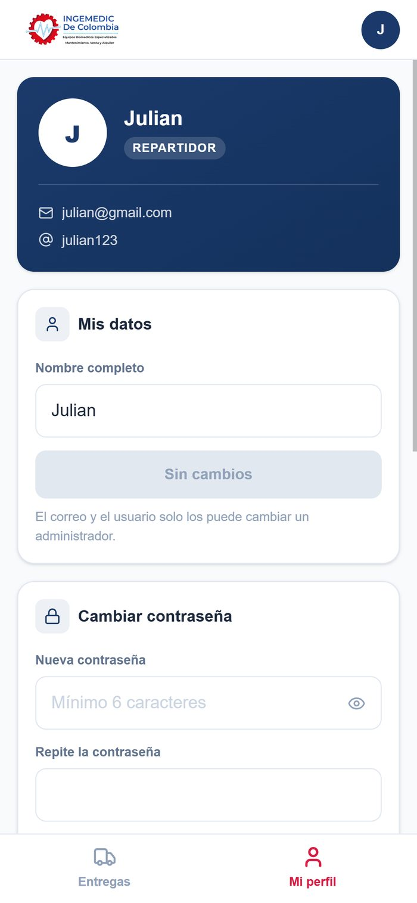
Mi perfil del repartidor.
Parte 3 · AdministraciónConfiguración
Todo está en Configuración, agrupado en Acceso, Inventario y Sistema.
Usuarios y roles
En Usuarios, crea la cuenta con nombre, correo, contraseña inicial y rol.
El rol define qué módulos ve. El Repartidor solo ve sus visitas; los demás roles ven los módulos que tengan permitidos.
Para quienes firman actas, completa cargo y documento (o lo completan ellos al firmar la primera vez).
Acceso de clientes
Da a un cliente usuario y contraseña para que entre al portal de clientes y vea sus equipos y préstamos. Elige el cliente, crea o cambia su acceso, y ve cuándo entró por última vez.
Categorías y tipos
Categorías: los grupos de equipos (Concentradores, Cilindros…), con sus columnas propias.
Tipos de equipo: cada modelo dentro de una categoría, con nombre, imagen y sus datos.
Se recarga: marca esta casilla en los tipos que se recargan. Solo esos salen en una recarga. Si no se marca, los cilindros se recargan.
Datos de la empresa y logos
Razón social, NIT, dirección, teléfonos y representante: salen en las actas y documentos. Sube el logo y, si quieres, el logo para modo oscuro (PNG con fondo transparente).
Plantillas de actas
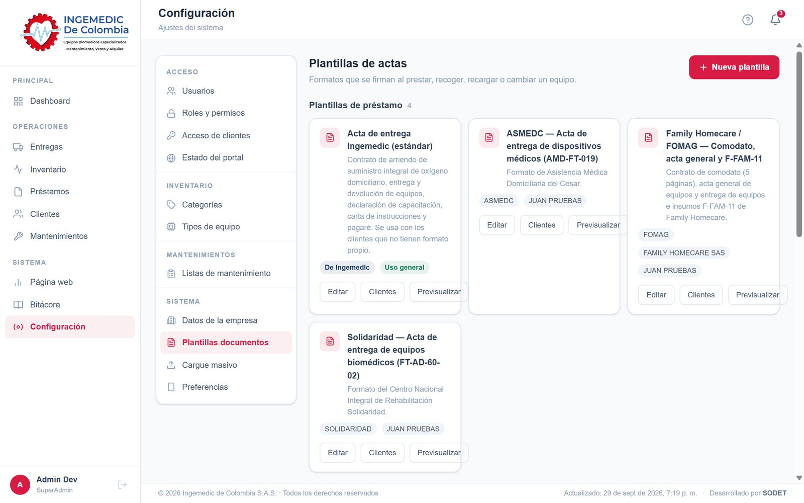
Configuración → Plantillas documentos, agrupadas por acción.
Las plantillas son los formatos que se llenan y firman. Están separadas por acción:
Acción
Se usa al…
De Ingemedic
Préstamo
Entregar un préstamo
Acta de entrega Ingemedic (estándar)
Devolución
Recoger equipos
Acta de devolución Ingemedic
Recarga
Recargar
Acta de recarga Ingemedic
Cambio de equipo
Cambiar un equipo
Acta de cambio de equipo Ingemedic
Cada cliente usa sus propias plantillas en cada acción; si no tiene una para esa acción, se usa la de Ingemedic.
Crear una plantilla
Toca Nueva plantilla y elige para qué es (préstamo, devolución, recarga o cambio).
Elige cómo empezar: Importar desde Word, Copiar una existente o En blanco.
En el Word, escribe los datos entre corchetes: [Nombre del paciente], [Cédula del paciente], [Equipos], [Firma de quien recibe]… La lista de nombres está en la misma ventana. Un nombre que el sistema no conoce queda como campo propio para llenar.
Ajusta en el editor: bloques de títulos, textos, campos, tablas de equipos (una tabla por tipo de equipo), firmas e imágenes. A la derecha ves cómo queda. Ctrl+Z deshace.
Guarda.
Asignarla a clientes
En la tarjeta de la plantilla toca Clientes.
Marca los clientes que la usan. Uso general la deja elegir con cualquier cliente.
De Ingemedic para … la vuelve la de respaldo de su acción (solo una por acción).
Previsualizar muestra la plantilla con datos de ejemplo.
Actas ya firmadas. No cambian aunque después edites la plantilla: cada acta guarda su copia.
Cargue masivo
Importa equipos o clientes desde un archivo CSV. La ventana indica las columnas que debe tener el archivo.
Preferencias
Modo oscuro y la navegación del celular.
Anexos
Estados
Préstamo
Estado
Significa
Borrador
Le falta repartidor o fecha de entrega.
Programada
Lista para que el repartidor la entregue.
En reparto
El repartidor va en camino.
Entregada
El paciente o cliente tiene los equipos.
Finalizada
Todos los equipos se devolvieron.
Cancelada
Anulado; los equipos quedaron libres.
Equipo
Estado
Significa
Disponible
Listo para prestar.
Reservado
Apartado para una entrega o un cambio programado.
En préstamo
Lo tiene un paciente o cliente.
Baja
Fuera de servicio.
Visita (entrega, recogida, recarga, cambio)
Estado
Significa
Por iniciar
Programada; el repartidor no ha salido.
En camino
El repartidor la inició.
Completada
Firmada; ya se aplicó.
Cancelada
Se canceló desde el préstamo.
Preguntas frecuentes
No encuentro un préstamo.
En Préstamos, escribe el nombre o la cédula del paciente, o el código o serial del equipo. Revisa la pestaña: En curso, Historial (finalizados y cancelados) o Todos.
No me deja recoger, recargar o cambiar.
Solo se puede con el préstamo Entregada. Si un equipo ya tiene una acción programada, sale marcado y no se puede elegir de nuevo: cancélala en Programado si hace falta.
En la recarga no aparece el equipo.
Solo salen los tipos marcados con Se recarga (Configuración → Tipos de equipo).
El formato sale con espacios en blanco.
Son datos que no se llenaron. Ábrelo con Llenar datos (formatos sin firmar) o complétalos al firmar. Lo que no aplica puede quedar en blanco.
Me equivoqué al programar una recogida.
En el préstamo, sección Programado, toca Cancelar y prográmala de nuevo. Si era un cambio, el equipo reservado vuelve a quedar disponible.
El cliente no tiene formato de recarga.
Se usa el de Ingemedic. Si el cliente tiene uno propio, súbelo en Plantillas (para Recarga) y asígnaselo.